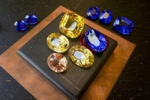
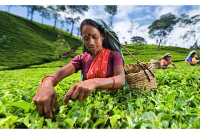

INDUSTRY OF CEYLON TEA
Buy and help to tea industry
Sri Lanka's export earnings and tea production had been declining before COVID-19 struck. Unfavorable weather patterns and structural issues with a longer time horizon, such as labor shortages and a lack of technological adoption, have throughout time had an impact on output levels. The pandemic's initial wave exposed the tea industry's flaws. The majority of the major tea users, including Sri Lanka, are currently battling with a second wave that could have more detrimental impacts than previously anticipated.
WOODEN MASK

GEMS
WOOD CARVING

Donate
Why would you donate...
We couldn't make any kind of tea without tea workers. Even while we purchase our tea from reliable sources, we are conscious that sometimes even these efforts fall short of ending the poverty cycles that many employees are trapped in. We frequently feel helpless since we have little control over how the money we pay is allocated across the supply chain, much like many other coffee and tea firms.
Want to support us as we change things? You can subscribe to make a little payment as often as you'd like or make a one-time donation below.